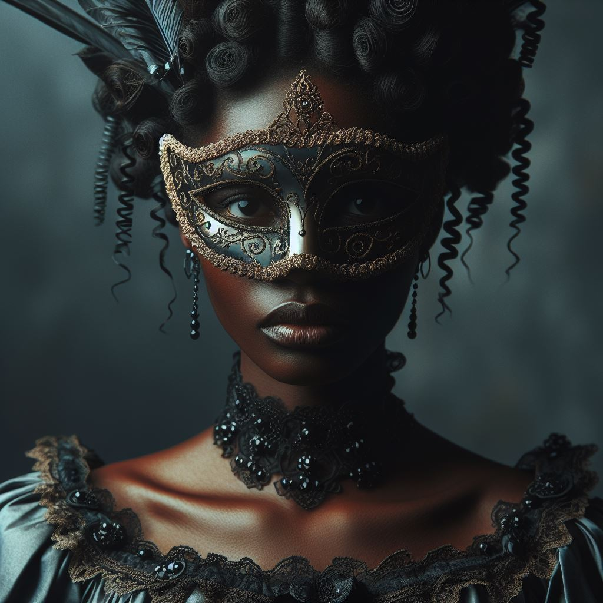

Description : Clara Beaumont est une jeune femme d'une beauté saisissante, aux traits délicats et à la grâce naturelle. Elle porte toujours des tenues élégantes, mais son regard révèle une profondeur et une intelligence qui vont bien au-delà de son apparence extérieure.
- Motivations : Clara est motivée par son désir de trouver le bonheur et le sens dans sa propre vie. Elle cherche constamment à découvrir sa véritable passion et à trouver sa place dans le monde, indépendamment des attentes familiales ou sociales qui pèsent sur elle.
- Relations : Clara entretient des relations étroites avec sa famille, en particulier avec son frère Felix. Ils partagent un lien fort et une loyauté inébranlable, malgré les tensions et les conflits qui peuvent surgir entre eux. Clara entretient également des amitiés sincères avec quelques personnes choisies dans la haute société, trouvant du réconfort et du soutien dans ces relations.
Tensions : Clara ressent le poids des attentes familiales et de la pression sociale pour se conformer aux normes de la société. Sa relation avec sa famille, en particulier avec son frère Felix, est teintée de conflits et de frustrations refoulées, alors qu'elle cherche à trouver son propre chemin dans la vie. La menace constante des secrets familiaux la hante, alimentant sa paranoïa et son anxiété à mesure que la nuit du bal masqué avance.
- Secrets : Clara cache un passé douloureux marqué par des tragédies familiales et des luttes personnelles. Elle a surmonté des épreuves difficiles qui ont forgé son caractère et influencé ses perspectives sur la vie, mais elle garde ces détails cachés derrière un masque de grâce et de dignité. Elle détient des secrets familiaux qui pourraient bouleverser l'équilibre fragile de sa famille. Ces secrets pourraient révéler des vérités inattendues sur les relations familiales ou les affaires familiales, remettant en question les fondations mêmes de la famille Beaumont.